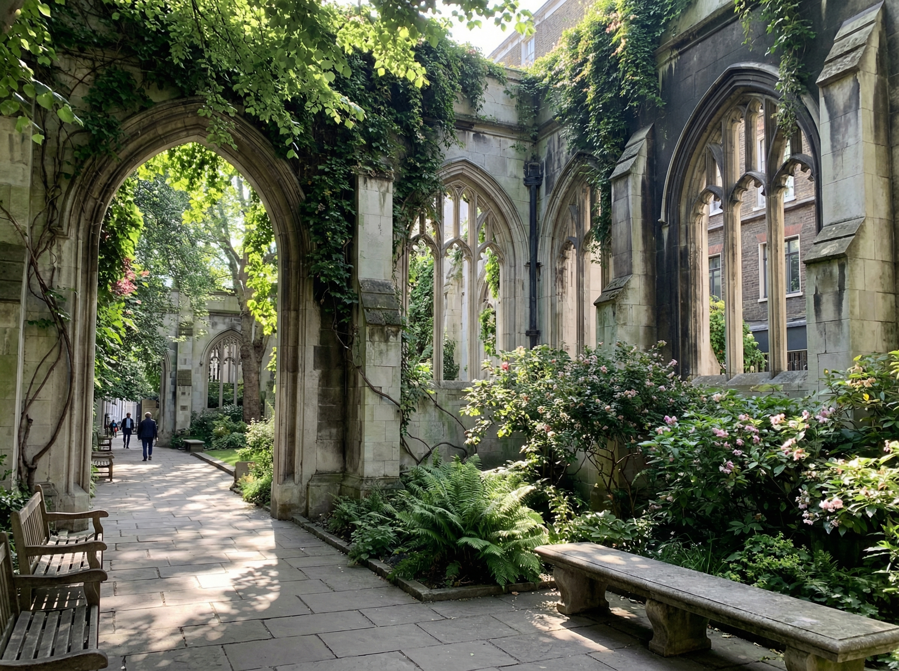

1

St. Dunstan in the East
20 minutesA secret garden hidden inside the shell of a bombed-out medieval church. This is one of the most atmospheric and peaceful spots in London, and most tourists walk right past it.
Look for the trees growing through the arched windows of the Wren-designed tower. The contrast between the grey stone ruins and the lush green vines is stunning.
Originally built around 1100, this church was severely damaged in the Great Fire of 1666, patched up by Sir Christopher Wren, and finally destroyed by the Blitz in 1941. Instead of rebuilding, the City turned it into a public garden in 1971.
Insider tip: It opens at 8 AM. If you start your tour early, you might have this enchanting space entirely to yourself for photos.